groo
Role
Design team of one!
Timeline
Mar. 21 - 29, 2021
(~1 week)
Skills
- Prototyping
- User Research
- UI/UX Design
- Visual Design
Tools
- Figma
- Illustrator
- Photoshop
🥇 Best Overall - based on UI/UX, app pitch, and creativity
In March 2021, I participated in the University of Toronto FinTech Pitchathon, which invited participants to turn an innovative finance-related app idea
into a 5-minute captivating pitch and well-designed prototype.
Problem
As a university student, one of the most common issues that I hear amongst friends and peers is how to track personal finances.
This is also a personal pain point for me as I balance tuition payments, textbook fees, along with regular expenses. Some of these expenses are reflected in bank statements,
but smaller cash expenses are often neglected. However, these small expenses can build up over time.
In addition to tracking personal finances, finding a way to stick to good practices once they were developed was another issue.
Therefore, I wanted to find out through research how effective the idea of gamification in a finance app would be. My rationale was that users would view managing their personal
finances as less of a chore and more like an activity that they enjoy.
Process
Below is a diagram of the process that I followed for this project:
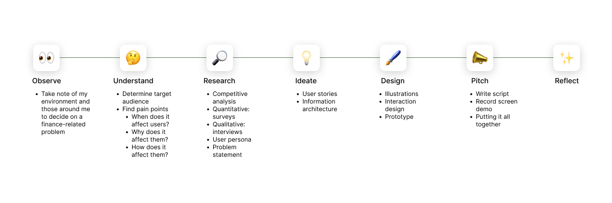Research
Next, with a problem narrowed down, I completed a competitive analysis and conducted both quantitative and qualitative research to gain a better understanding of the problem at hand.
Survey
To start, I made a survey on Google Forms about the current personal finance apps, as well as how frequently these tools are put to use. I sent the survery to a few friends and asked if they could send the survey out to their social networks so that there would be a greater reach. The demographics of the respondents ranged from ages 19-24 with different gender identifications. The number of responses totalled at 30.
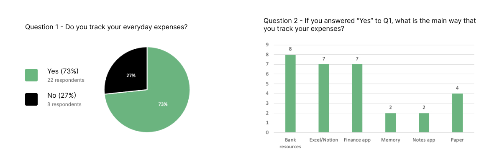 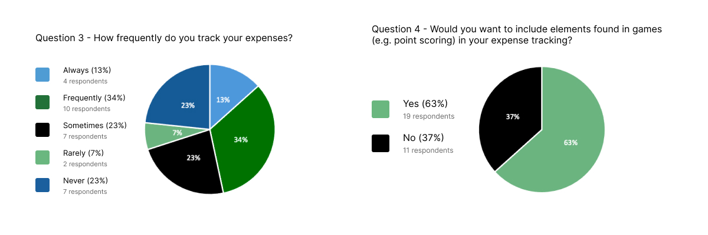From the results, most of the surveyees practice tracking their everyday expenses; however, the frequency that this tracking occurs varied.
Interviews
Afterwards, I conducted interviews with 3 of the respondents who chose "finance app" as their main form of expense tracking. I wanted to gain a deeper understanding of their main pain points when it came to using an app to help them manage their finances. I also wanted to learn which features of existing apps were most frequently used and highly rated by users.
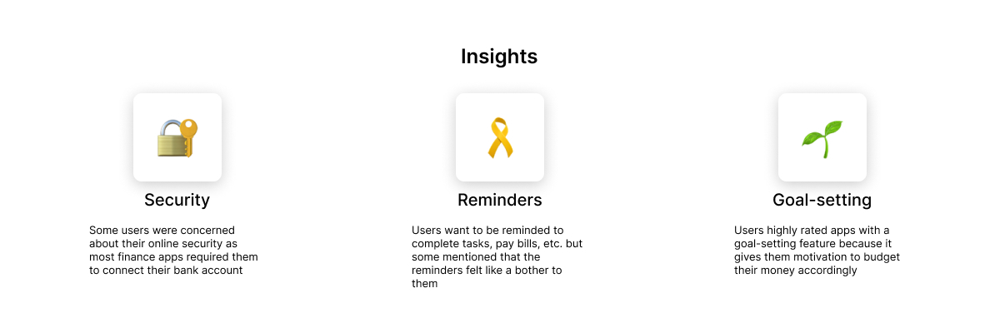Competitive analysis
With an interest in gamification confirmed through the survey, I did some research on existing personal finance apps, with a focus on those that use a gamified approach to tracking personal finances. I compared the apps on a number of different features and elements.
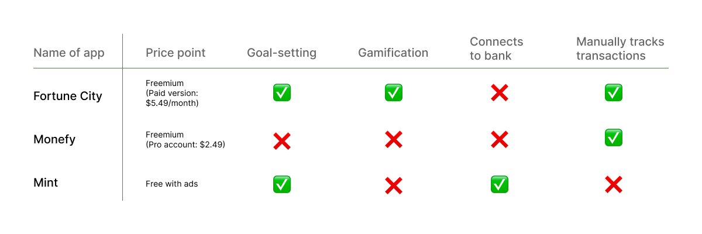Key takeaways
From the competitive analysis, I realized that there were apps on the market that offered a gamified experience in managing personal finances. However, while researching for the analysis above, I came across
numerous complaints from users that they had to make small purchases on the app in order to enjoy the full gamified experience which went against the nature of the app as a budgeting tool.
Additionally, users often value a simple and intuitive user interface as it allows for them to interact with the app more easily.
Finally, although there was some discontentment with manually tracking each expense, users also appreciated how they were not required to connect their bank account to the app, which some felt was unsecure.
User persona
With the time constraint that I facing and the amount of research I had conducted, I gathered all of the information that I had collected, analyzed it, and identifed patterns in the data. Next, I created the primary persona (see below) from the behavioural patterns that I recognized.
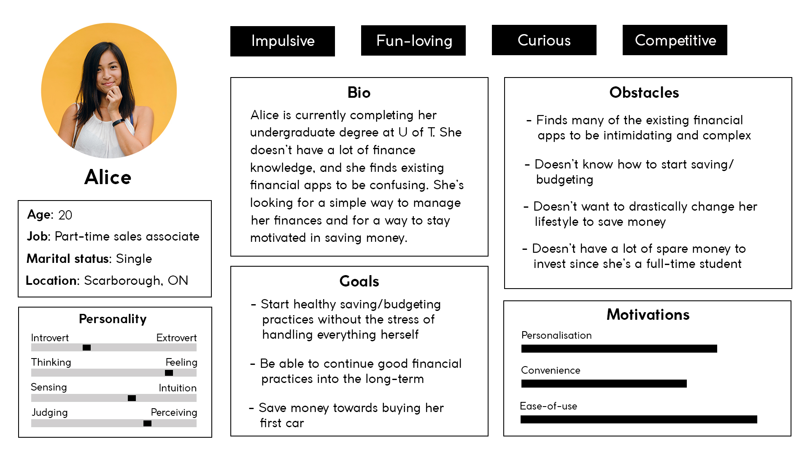
Through my design process, I referred back to this persona in order to remind myself who I am designing for and to gain perspective in what users might need.
Problem statement
As the research was complete, it was time to define a problem statement to help guide the next stage of formulating possible solutions:
How might we foster healthy financial practices through gamification?
Ideation
User stories
To help better identify what features were needed, I created a few user stories based on the comments and feedback I gathered during the interviews.
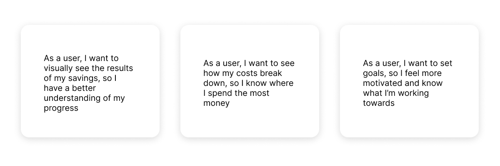
In order to visualize the progress that the user was making, I went with a plant theme so that the user will be collecting various plants to build their "forest".
The act of collecting items is the element of gamification that I included. This element is often seen in many games, whether it's collecting coins, characters, clothes, etc.
In addition, once I decided on the plant theme, I also started brainstorming for the name, and ultimately decided on "groo", which is a homophone to "grew".
To view the breakdown of their expenses, users will have access to an analytics section of the app, where expenses will be categorized and the percentage of the category to the total will be shown.
Users can filter the expense breakdown by day, week, or month.
For goal-setting, users will have the chance to set goals during their onboarding process and track their progress as they continue to use the app.
Additionally, groo will have a number of different tasks that are updated regularly for users to complete, which are small goals that are set by the app.
Completion of goals will result in various number of plants as an award.
Information architecture
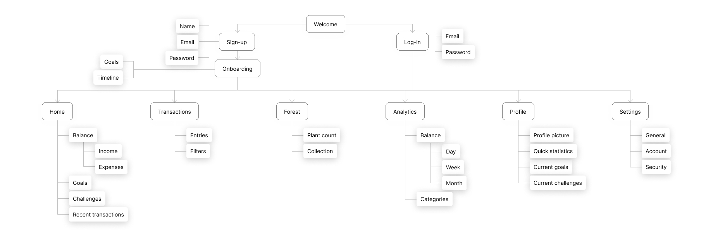
Wireframes
I created the wireframes with paper and pencil first to determine the structure and layout of the design before going into Figma to work on the high-fidelity prototype. Below are a few of the sketches of the sign-up screen and home, transactions, and analytics tabs:
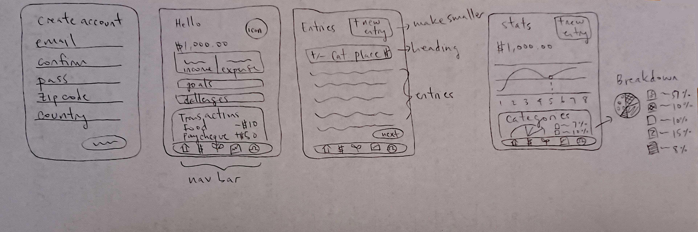
Design
Illustrations
When I envisioned how my app would look like, I knew that I wanted it to include a number of illustrations. They would help to reinforce the plant theme while also giving the app a more playful and friendly image. Below are three screens from the app (minus any text, buttons, etc.) with some illustrations!
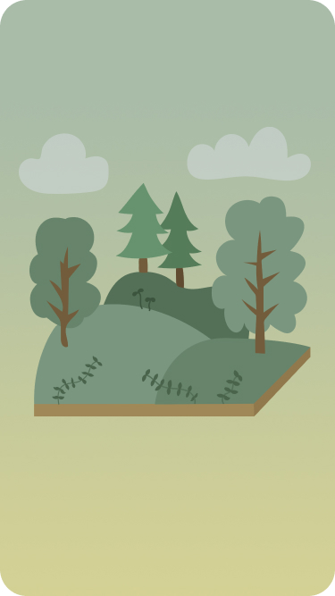 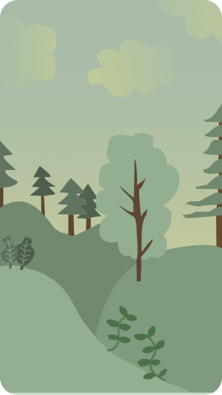
Interaction design
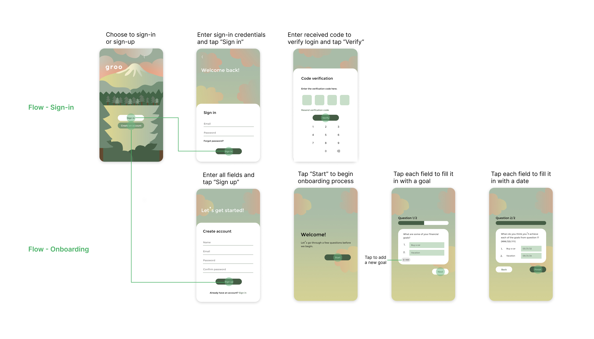 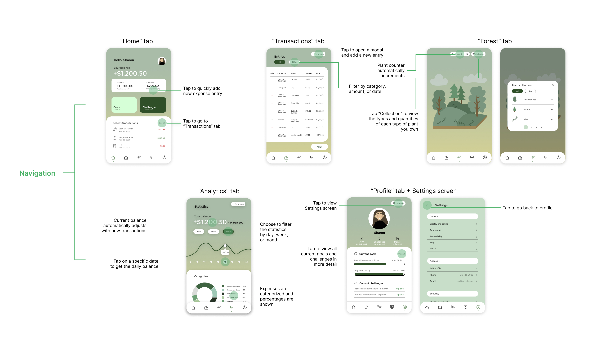Prototype

If you'd like to interact with the final prototype on Figma yourself, feel free to try it out here!
Pitch
Throughout the process of creating the design, I had thought about what I would include in my pitch. In order to ensure I would have a smooth time recording the voiceover,
however, I decided to write out exactly what I wanted to say in a script. Following that, I screen recorded a demo of the finished prototype and put the pitch video together.
If you'd like to check out my pitch video, feel free to watch it here on my Devpost!
Takeaways
1. You don't have to reinvent the wheel every time — I spent a lot of time at the beginning of the pitchathon brainstorming different app ideas that I could pursue. I'd wanted to create something that would blow the judges away with its originality. It was only after a day or two of this sort of mindset did I realize that this wasn't the only way to come up with a good idea. Sometimes it's about taking an existing idea and putting your own spin on it while finding a better way to do things.
2. Let your users help you — After conducting the survey and the interviews, I gained a significantly deeper understanding of what users are looking for in a financial app and what pain points they face with existing ones. This data helped me to determine what features I should include in groo. Although this takeaway might seem obvious, this project was one of the first times that I've gotten the chance to conduct user research (besides what I've done during my co-op work term). It was still amazing to me how imperative it is to involve users throughout the design process and how drastically it can change your final product.
3. Build a project plan to guide you — Once I'd decided upon an app idea, I created a project plan on Excel to help organize the tasks I needed to complete, the deliverables I needed to create, as well as the timeline I needed to follow. For a project like this that required me to finish before a strict deadline, a project plan gave me much needed guidance while allowing for some flexibility. Although this took some time in the beginning stages of the competition, it paid off in the end by helping me to ensure that I wasn't missing any pieces of work. It also held me accountable for the most part in finishing everything I needed to do within the allocated time.
Reflection
More emphasis on research
If I were to do this a second time, I would have tried to examine existing problems with existing financial apps earlier.
Although I think it's okay to pivot amongst different ideas while scoping out the problem, I also think that it's important to keep time constraints in mind and to decide on a feasible area to explore. By figuring out what problem to work on quicker,
I would've had more time to conduct research while I was trying to define the problem.
Specifically, I would have done more secondary research on gamification, and I also would have interviewed more potential users to gain an even deeper understanding of their pain points with financial apps.
Accessibility
Additionally, I would have liked to focus on the accessibility of the design to improve the user experience. In particular, I would've liked to focus on touch target size and placement for the various components of the app. As there are a number of different places on the app where the user will have to input data, I would also like to spend more time on the ways in which data entry will be performed.
.
.
.
Ultimately, this is the first iteration of groo. There is still a lot for me to explore as I work on the next iteration! If you have any feedback or would like to share your thoughts with me on this case study, feel free to contact me via the links below!